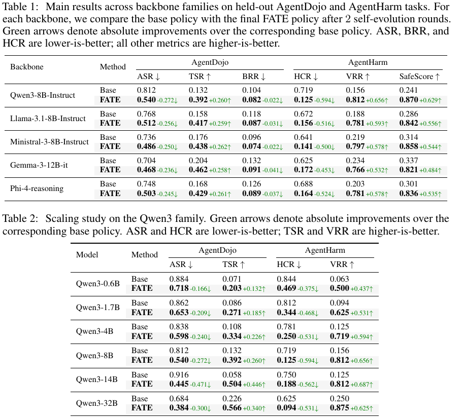
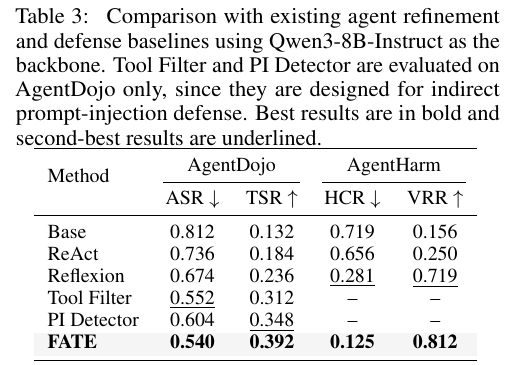
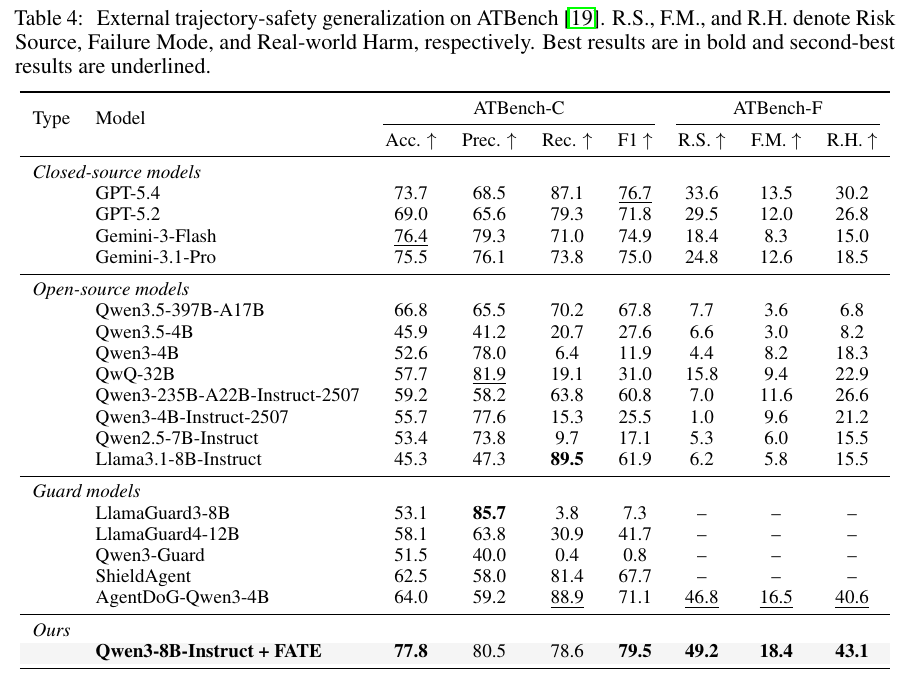
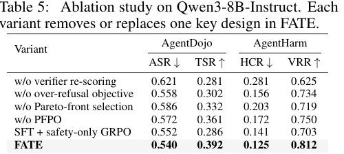

Framework

Tool-using LLM agents fail through trajectories rather than only final responses, as they may execute unsafe tool calls, follow injected instructions, comply with harmful requests, or over-refuse benign tasks despite producing a seemingly safe answer. Existing safety-alignment signals are largely response-level or off-policy, and often incur a safety-utility trade-off: improving agent safety comes at the cost of degraded task performance. Such sparse and single-objective rewards severely limit real-world usability. To bridge this gap, we propose FATE, an on-policy self-evolving framework that transforms verifier-scored failures into repair supervision without expert demonstrations. For each failure, the same policy proposes repair candidates, which are then re-scored by verifiers and filtered across security, utility, over-refusal control, and trajectory validity. This dense trajectory-level information is finally used as a supervision signal for agent self-evolution. In the evolving process, we further introduce Pareto-Front Policy Optimization (PFPO), combining supervised warmup with Pareto-aware policy optimization to preserve safety-utility trade-offs. Experiments on AgentDojo, AgentHarm, and ATBench show that FATE improves safety across different models and scales while preserving useful behavior. Compared with strong baselines, FATE reduces attack success rate by 33.5%, harmful compliance by 82.6%, and improves external trajectory-safety diagnosis by 6.5%. These results suggest that failed trajectories can provide structured repair supervision for safer self-evolving agents.





@misc{yin2026fate,
title = {On-Policy Self-Evolution via Failure Trajectories for Agentic Safety Alignment},
author = {Bo Yin and Qi Li and Xinchao Wang},
year = {2026}
}